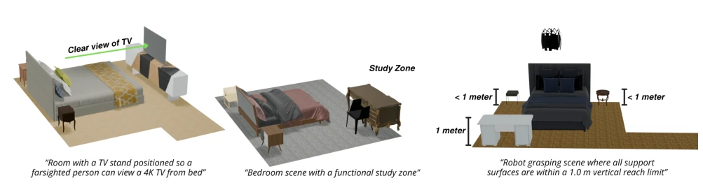
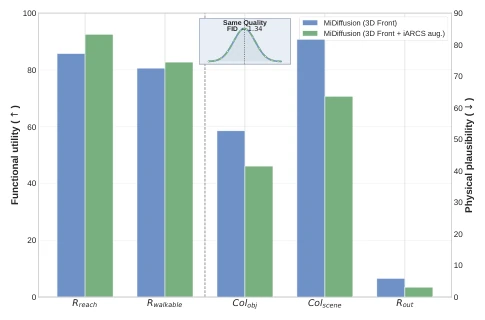
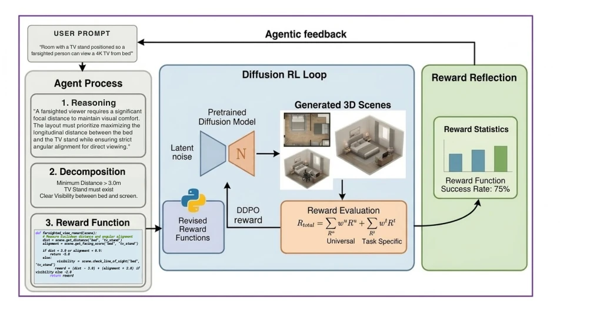
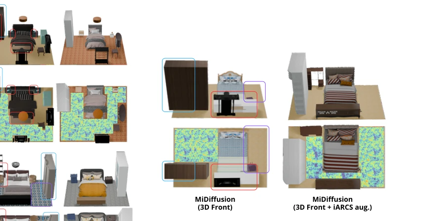
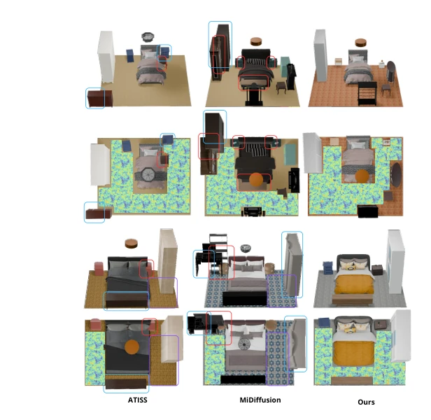
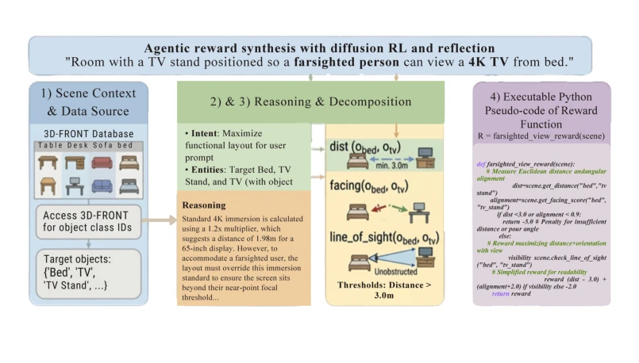
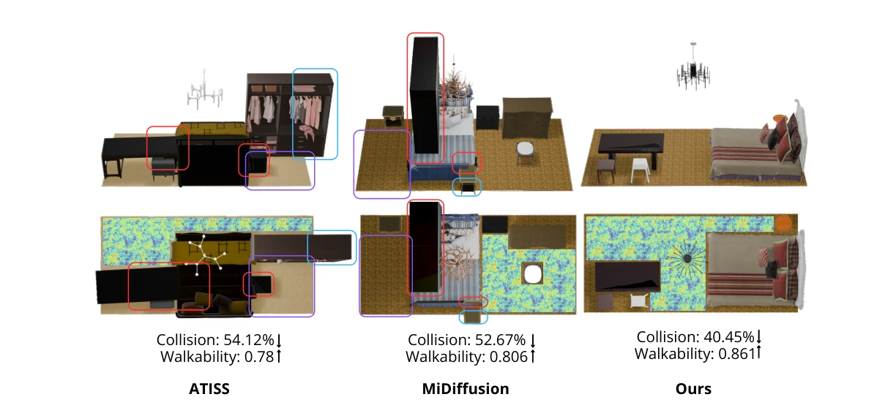
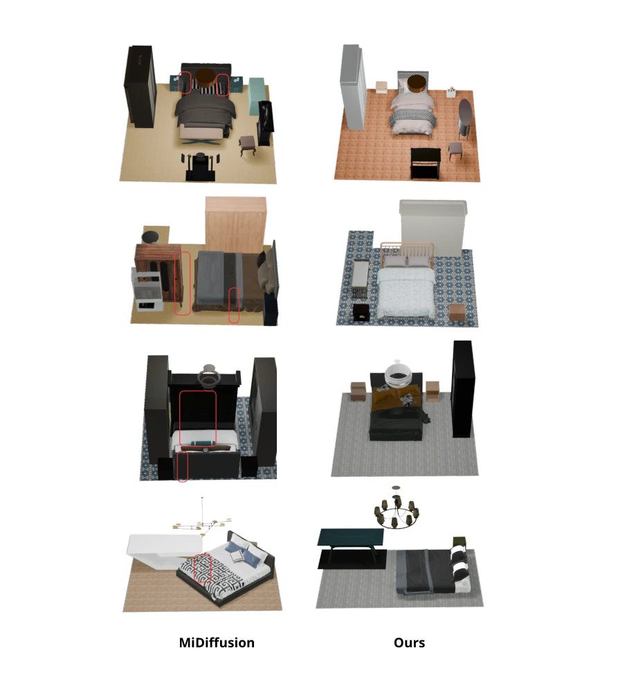

这篇 iARCS 算是给 3D 场景生成加了个“强化学习+LLM”的脑回路。它不满足于生成“好看”的房间，非要搞“好用”的，这点很 Embodied AI。但把奖励函数交给 LLM 写代码，万一 LLM 生成约束逻辑有偏差，模型岂不是在奖励黑客？而且两阶段 RL 训练，显存和算力估计得烧不少。不过能把生成数据反哺给基座模型，这点确实比单纯编辑强，算是个实用的数据工厂。未来若能解决 LLM 生成奖励的稳定性问题，或许能成为具身 AI 数据生成的标配。
This iARCS paper incorporates a "Reinforcement Learning + LLM" mechanism into 3D scene generation. It is not content with generating "aesthetically pleasing" rooms but insists on "functional" ones, which is very characteristic of Embodied AI. However, delegating the reward function to LLMs for code generation raises concerns: if the LLM generates biased constraint logic, could the model not be engaging in reward hacking? Furthermore, two-stage RL training is estimated to consume significant VRAM and computational power. Nevertheless, feeding generated data back to the base model is indeed superior to simple editing, functioning as a practical data factory. If the stability issue of LLM-generated rewards can be resolved in the future, it may become the standard for Embodied AI data generation.
研究动机Motivation
合成 3D 数据对具身 AI 至关重要，但现有生成器（如 ATISS [24], MiDiffusion [16]）只顾着像不像，不管能不能走、能不能够。下游任务需要功能性约束（如可达性、避障），但纯文本引导 [20, 42] 难以保证几何约束的精确性，过程式生成又太死板。这导致生成的数据虽然逼真，却缺乏任务关键的边缘案例，形成数据瓶颈。现有方法难以在保持分布多样性的同时满足严格的物理和功能规则，限制了合成数据在下游训练中的实用性。
Synthetic 3D data is crucial for Embodied AI, yet existing generators (e.g., ATISS [24], MiDiffusion [16]) focus solely on visual fidelity, neglecting walkability and reachability. Downstream tasks require functional constraints (e.g., reachability, obstacle avoidance), yet pure text guidance [20, 42] struggles to ensure geometric constraint precision, while procedural generation is too rigid. This results in generated data that, while realistic, lacks task-critical edge cases, creating a data bottleneck. Existing methods struggle to maintain distribution diversity while satisfying strict physical and functional rules, limiting the practicality of synthetic data in downstream training.
iARCS adopts a two-stage RL framework. Stage 1 employs general rewards (collision, boundaries) to correct diffusion model bias, ensuring physical rationality. Stage 2 introduces an LLM agent that converts natural language into executable reward code (Reward Program), combining general rewards to optimize the diffusion policy via DDPO [2]. The key innovation is the Reward Reflection module, where the LLM iteratively corrects reward logic based on statistical feedback to prevent reward hacking. LoRA fine-tuning is used to maintain diversity. The entire process converts non-differentiable constraints into optimizable objectives, achieving closed-loop control from text to scene.
Based on the 3D-FRONT dataset, we compare against ATISS [24] and MiDiffusion [16]. Metrics cover physical rationality (collision rate) and functional utility (reachability, walkability). iARCS significantly outperforms baselines on functional metrics while maintaining competitive FID. Ablation experiments demonstrate that two-stage training outperforms single-stage. Furthermore, data generated by iARCS improves base model performance, validating its value as a data augmentation engine. Under specific task constraints, the scene diversity generated by iARCS even surpasses that of a subset of filtered real datasets.
其他图片Other Figures

Figure 1. Qualitative results of iARCS under different reward-function specifications. Across tasks, the generated scenes follow the intended reward-driven constraints (e.g., spatial arrangement and functional objectives) while preserving overall scene quality, including physical plausibility and walkable structure.

Figure 2. MiDiffusion trained with iARCS augmentation vs. MiDiffusion trained on 3D-FRONT only. We compare MiDif- fusion trained on 3D-FRONT against MiDiffusion trained on 3D- FRONT + iARCS-generated synthetic data. The augmented set- ting improves functional utility (Rreach, Rwalkable) and physical plausibility (Colobj, Colscene, Rout) across all reported metrics, while matched FID (1.34) indicates preserved generative quality and diversity.

Figure 3. iARCS overview: agentic reward synthesis with diffusion RL and reflection. Given a user prompt, an LLM agent performs (1) reasoning, (2) constraint decomposition, and (3) executable reward-program generation. The generated task reward is combined with universal rewards to form a composite objective, which is optimized by DDPO in the diffusion RL loop to fine-tune a pretrained scene generator. A reward-reflection module monitors reward statistics from generated scenes, revises reward code/weights, and feeds updates back to the agent, enabling iterative improvement in constraint satisfaction while preserving scene realism and diversity.

Figure 5. Qualitative effect of synthetic-data augmentation on MiDiffusion. We compare MiDiffusion trained on 3D-FRONT only versus MiDiffusion trained with 3D-FRONT + iARCS- generated synthetic data (Table 2). The augmented model pro- duces layouts with improved physical plausibility and functional utility while preserving scene realism. The red, blue, and pur- ple boxes highlight collisions between objects, objects outside the floor plan, and unreachable areas respectively. (Better viewed zoomed.)

Figure 4. Qualitative comparison of generated scenes from ATISS, MiDiffusion, and iARCS (ours). iARCS produces more physically plausible and functionally usable layouts, with fewer object collisions, better boundary adherence, and clearer walka- ble regions.The red, blue, and purple boxes highlight collisions between objects, objects outside the floor plan, and unreachable areas respectively. (Better viewed zoomed.)

Figure 6. Example of agentic reward synthesis for a task-specific prompt. Given the prompt “Room with a TV stand positioned so a farsighted person can view a 4K TV from bed,” the LLM pipeline (1) retrieves scene context from 3D-FRONT objects, (2) performs intent- level reasoning and constraint decomposition, (3) derives measurable geometric checks (e.g., viewing distance and orientation constraints), and (4) outputs executable reward code used in the diffusion RL loop. This example illustrates how natural-language requirements are translated into optimizable reward functions for constraint-aware scene generation.

Figure 8. Qualitative sample comparison of ATISS, MiDiffusion, and iARCS.

Figure 9. Qualitative sample comparison of MiDiffusion and iARCS.